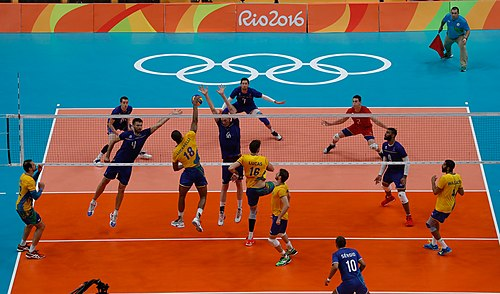

Volleyball is a team sport in which two teams of six players are separated by a net. Each team tries to score points by grounding a ball on the other team's court under organized rules.[1] It has been a part of the official program of the Summer Olympic Games since Tokyo 1964. Beach volleyball was introduced to the program at the Atlanta 1996 Summer Olympics. The adapted version of volleyball at the Summer Paralympic Games is sitting volleyball.
